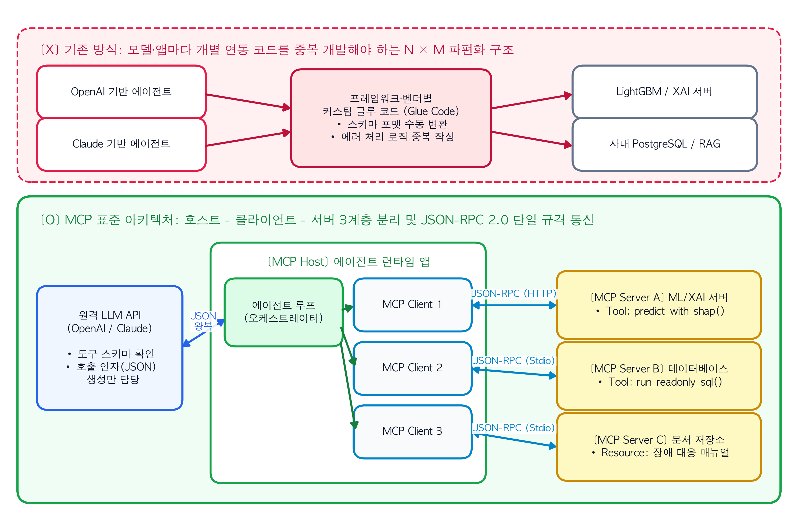
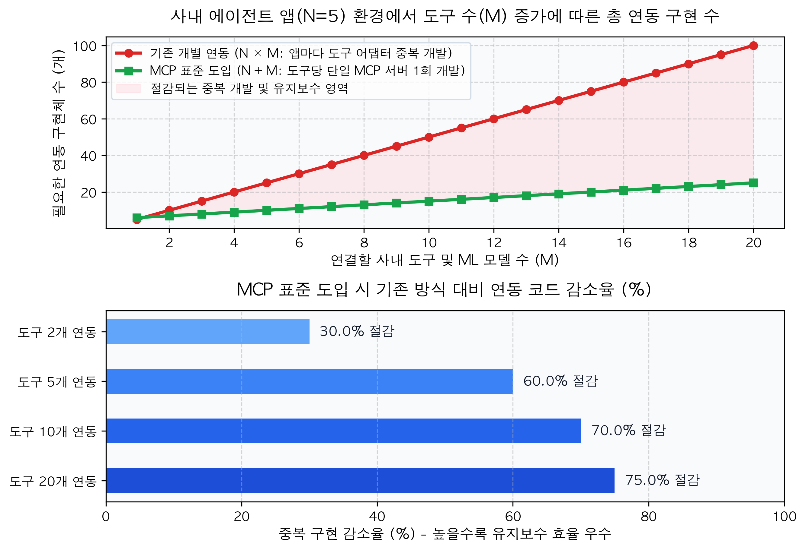

5 서버-클라이언트 관점에서 본 Tool Calling과 MCP(Model Context Protocol)
앞선 4장에서는 에이전트가 추론(Thought)과 행동(Action), 그리고 관찰(Observation)을 번갈아 수행하며 문제를 해결하는 ReAct와 Reflexion 루프를 다루었다. 개념적인 루프 구조를 이해했다면, 이제 시스템 엔지니어링 관점에서 이 루프가 실제 네트워크와 프로세스 상에서 어떻게 실행되는지 살펴볼 차례다.
주니어 개발자들이 에이전트 프레임워크를 처음 사용할 때 가장 흔히 오해하는 부분은 “거대언어모델(LLM)이 내 로컬 코드의 파이썬 함수를 직접 실행하거나 사내 데이터베이스에 직접 접속한다”고 생각하는 것이다. 그러나 클라우드 API 너머에 있는 LLM 서버는 사용자 애플리케이션의 메모리 공간이나 사내 폐쇄망 데이터베이스에 접근할 권한이 없으며, 코드를 직접 실행할 수도 없다.
실제 도구 호출(Tool Calling)은 철저히 분리된 클라이언트-서버 아키텍처(Client-Server Architecture) 위에서 동작한다. 더 나아가 최근 엔터프라이즈 환경에서는 파편화된 도구 연동 방식을 하나로 통합하기 위해 앤트로픽(Anthropic)이 개방형 표준으로 발표한 MCP(Model Context Protocol)를 빠르게 도입하고 있다.
본 장에서는 Function Calling의 정확한 네트워크 왕복 메커니즘을 규명하고, MCP가 어떻게 기존 통합 구조의 복잡도를 해결하며 우리가 만든 머신러닝·딥러닝 모델을 표준 도구로 노출하는지 해부한다.
5.1 오해 바로잡기: Function Calling의 실제 네트워크 왕복 구조
오픈AI(OpenAI)와 앤트로픽 등 주요 모델 제공사가 지원하는 Function Calling(또는 Tool Calling)은 LLM이 외부 함수를 직접 실행하는 기술이 아니다. 정확히 정의하면, “클라이언트가 제공한 함수 명세서(JSON Schema)를 바탕으로, LLM이 어떤 함수를 어떤 인자(Argument)로 호출해야 하는지 구조화된 JSON 데이터를 생성해 주는 기능”이다(OpenAI, 2023).
전체 통신 과정은 애플리케이션 런타임(Client)과 원격 LLM API(Server), 그리고 실제 도구가 구동되는 백엔드 시스템 사이의 2단계 요청-응답 주기로 이루어진다.
5.1.1 1단계: 도구 명세 전송과 호출 의도(JSON) 수신
- 클라이언트 요청: 개발자가 작성한 애플리케이션 코드가 사용자의 질문과 함께 사용 가능한 함수들의 목록(
tools파라미터)을 JSON Schema 형태로 묶어 LLM API 서버에 HTTP POST 요청을 보낸다. 이때 함수의 실제 구현 코드(Body)는 전송하지 않으며, 오직 함수 이름, 설명, 입력 파라미터의 자료형만 전송한다. - LLM 추론 및 응답: LLM은 질문을 해결하기 위해 외부 도구가 필요하다고 판단하면, 일반 텍스트 답변 대신
finish_reason="tool_calls"상태값과 함께 호출할 함수 이름(name)과 인자(arguments)가 담긴 JSON 객체를 반환한다.
5.1.2 2단계: 로컬/내부망 함수 실행과 결과 재전송
- 클라이언트 측 실제 실행: 애플리케이션 런타임은 LLM이 반환한 JSON 문자열을 파싱(Parsing)하여, 사내 서버나 로컬 환경에 있는 실제 파이썬 함수(예: LightGBM 추론 함수, SQL 조회 함수)를 실행한다. 즉, 보안이 요구되는 데이터베이스 접속이나 모델 추론 연산은 전적으로 클라이언트의 통제 구역 안에서 실행된다.
- 관찰 결과 주입 및 최종 응답 생성: 애플리케이션은 함수 실행 결괏값을
role="tool"메시지에 담아 이전 대화 내역에 추가한 뒤, LLM API를 두 번째로 호출한다. LLM은 이 실행 결과를 읽고 최종 자연어 보고서를 작성하여 반환한다.
NoteDS Bridge: 기존 ML 개념과 에이전트 개념 1:1 매칭하기
클라이언트-서버 개발이나 ML 모델 서빙(Serving)을 경험해 본 엔지니어라면, Tool Calling과 MCP의 구조를 기존의 REST API 명세(OpenAPI/Swagger) 및 원격 프로시저 호출(RPC) 개념과 비교하여 정확히 이해할 수 있다.
| 비교 항목 | 전통적 웹 / ML 서빙 아키텍처 | 에이전트 Tool Calling & MCP 아키텍처 |
|---|---|---|
| 인터페이스 명세 | OpenAPI (Swagger) 스펙, Protobuf (.proto) 파일 |
JSON Schema 기반의 도구 명세서 (name, description, inputSchema) |
| 호출 결정 주체 | 프론트엔드/백엔드 개발자가 하드코딩한 분기문 | LLM이 런타임에 문맥과 도구 설명(description)을 읽고 동적으로 결정 |
| 실행 주체 (Runtime) | API 게웨이 뒤단의 마이크로서비스 서버 | 애플리케이션 클라이언트 런타임 또는 분리된 MCP 서버 프로세스 |
| 통신 프로토콜 | HTTP REST, gRPC | 벤더별 전용 HTTP API (Function Calling) 또는 JSON-RPC 2.0 (MCP 표준) |
| ML 모델의 위치 | 고정된 엔드포인트(/v1/predict)로 수동 호출 대기 |
MCP 서버 내부의 도구(predict_anomaly)로 등록되어 에이전트가 필요시 호출 |
5.2 왜 MCP(Model Context Protocol)가 필요한가? — \(N \times M\) 통합 문제의 해결
기본적인 Function Calling만으로도 소규모 프로젝트에서는 도구를 연결할 수 있다. 그러나 기업 환경에서 사용하는 LLM의 종류가 늘어나고 연결해야 할 사내 시스템이 많아지면 심각한 구조적 문제가 발생한다.
예를 들어 사내에 \(N\)개의 AI 애플리케이션(장애 진단 에이전트, 사내 지식 검색 봇, 코드 리뷰어, 로컬 IDE 등)이 있고, 이들이 접근해야 하는 데이터 소스 및 도구가 \(M\)개(PostgreSQL DB, 사내 매뉴얼 벡터 DB, LightGBM 예측 서버, 슬랙 API 등)라고 가정해 보자. 표준 프로토콜이 없다면 개발팀은 각 애플리케이션과 프레임워크(LangChain, LlamaIndex, 자체 코드 등)의 규격에 맞춰 모든 도구의 연동 코드를 중복해서 작성해야 한다.
이 경우 필요한 커스텀 연동 어댑터(Connector)의 총개수는 두 집단의 곱에 비례한다.
\[\text{필요한 통합 구현 수 (표준 부재 시)} = N \times M\]
더구나 오픈AI의 tools JSON 포맷과 앤트로픽 클로드의 input_schema 포맷, 구글 제미나이의 function_declarations 포맷은 세부 필드명이 서로 다르다. 모델을 교체하거나 새로운 에이전트 앱을 만들 때마다 기존에 짜둔 도구 연동 코드를 다시 수정해야 하는 유지보수 병목이 발생하는 것이다.
5.2.1 개방형 표준 MCP의 등장: \(N + M\) 구조로의 단순화
2024년 11월, 앤트로픽은 이러한 파편화를 해결하기 위해 MCP(Model Context Protocol)를 오픈소스 표준으로 발표했다(Anthropic, 2024). 컴퓨터 주변기기 연결 규격인 USB-C나 개발 도구의 언어 서버 프로토콜(LSP, Language Server Protocol)과 동일한 설계 철학을 따랐다.
MCP를 도입하면 도구 개발자는 에이전트 앱의 종류와 무관하게 단 하나의 표준 MCP 서버만 구현하면 된다. 반대로 에이전트 앱 개발자는 표준 MCP 클라이언트 규격만 지원하면 세상에 존재하는 모든 MCP 서버에 즉시 연결할 수 있다. 결과적으로 전체 통합 복잡도는 곱셈에서 덧셈으로 줄어든다.
\[\text{필요한 통합 구현 수 (MCP 도입 시)} = N + M\]
5.3 MCP 아키텍처의 3계층 구조와 통신 메커니즘
MCP는 JSON-RPC 2.0 메시지 규격을 기반으로 작동하며, 시스템 구성 요소를 호스트(Host), 클라이언트(Client), 서버(Server)의 3계층으로 명확히 분리한다.
- MCP 호스트 (Host): 사용자가 직접 상호작용하며 LLM 에이전트 루프를 구동하는 주 애플리케이션이다(예: 우리가 구축할 자율 장애 진단 에이전트 런타임, Claude Desktop, Antigravity 등의 AI IDE).
- MCP 클라이언트 (Client): 호스트 내부에 존재하며, 특정 MCP 서버와
1:1상태 유지 세션(Stateful Session)을 맺고 통신을 담당하는 프로토콜 모듈이다. 호스트 하나가 여러 개의 클라이언트를 띄워 여러 서버에 동시에 연결할 수 있다. - MCP 서버 (Server): 실제 데이터베이스, 파일 시스템, 혹은 머신러닝·딥러닝 모델 추론기를 감싸고 있는 독립된 경량 프로그램이다. 서버는 자신이 보유한 기능을 다음 세 가지 표준 형태(Primitives)로 클라이언트에 노출한다.
- 도구 (Tools): LLM이 호출을 결정할 수 있는 실행 함수다(예:
run_shap_analysis,execute_sql). - 리소스 (Resources): 파일 내용이나 데이터베이스 스키마, 로그 텍스트처럼 클라이언트가 읽어들여 컨텍스트로 참조할 수 있는 읽기 전용 데이터다(URI 형태로 식별됨).
- 프롬프트 (Prompts): 특정 도메인 작업을 수행하기 위해 서버 측에 미리 정의해 둔 재사용 가능한 프롬프트 템플릿이다.
- 도구 (Tools): LLM이 호출을 결정할 수 있는 실행 함수다(예:
5.3.1 전송 계층(Transport Layer): Stdio와 HTTP/SSE
MCP 클라이언트와 서버가 JSON-RPC 메시지를 주고받는 물리적 통로는 두 가지 방식을 표준으로 지원한다. * 표준 입출력 (Stdio Transport): 호스트가 로컬 PC나 동일 컨테이너 안에서 MCP 서버를 자식 프로세스(Subprocess)로 실행하고, 운영체제의 표준 입력(stdin)과 표준 출력(stdout) 스트림을 통해 통신한다. 네트워크 설정이 필요 없고 지연시간이 극히 짧다. * HTTP / SSE (Streamable HTTP Transport): ML 모델 추론 서버처럼 별도의 GPU 인스턴스나 원격 서버에서 돌아가는 도구를 연결할 때 사용한다. 클라이언트는 HTTP POST로 요청을 보내고, 서버는 스트리밍 응답을 반환한다.
TipArchitecture Blueprint: Function Calling 왕복 흐름과 MCP 3계층 표준 아키텍처
다음 도식은 기존의 개별 어댑터 연동 방식이 가진 한계를 넘어, MCP 호스트-클라이언트-서버 구조가 어떻게 다양한 ML 모델과 데이터베이스를 단일 표준 프로토콜(JSON-RPC 2.0)로 통합하는지 보여준다.
5.4 파이썬으로 구현하는 MCP 메시지 교환과 통합 복잡도 비교
프레임워크 뒤에 숨겨진 프로토콜의 실체를 정확히 파악하기 위해, 파이썬의 pydantic을 활용하여 타입 힌트로부터 표준 도구 명세서(JSON Schema)를 자동 생성하고, MCP의 JSON-RPC 2.0 요청 및 응답 패킷이 어떻게 오가는지 직접 코드로 확인해 보자.
아울러 에이전트 앱(\(N\))과 도구(\(M\))의 개수가 늘어날 때 기존 방식과 MCP 방식의 통합 코드 작성량이 어떻게 벌어지는지 정량적으로 비교한다.
import json
from pydantic import BaseModel, Field
import numpy as np
import pandas as pd
import matplotlib.pyplot as plt
# 1. Pydantic을 활용한 MCP 도구 입력 스키마(inputSchema) 정의
class AnomalyCheckInput(BaseModel):
server_id: str = Field(..., description="조회할 대상 서버의 고유 식별자 (예: SRV-102)")
window_minutes: int = Field(10, ge=1, le=60, description="최근 몇 분간의 시계열 로그를 분석할지 지정 (1~60분)")
# MCP 서버가 tools/list 요청을 받았을 때 클라이언트에 반환하는 표준 도구 명세 생성
mcp_tool_definition = {
"name": "evaluate_server_anomaly",
"description": "전방 머신러닝 모델을 실행하여 대상 서버의 이상 확률과 상위 SHAP 기여 변수를 반환합니다.",
"inputSchema": AnomalyCheckInput.model_json_schema()
}
# 2. 클라이언트가 MCP 서버로 전송하는 JSON-RPC 2.0 도구 실행 요청 패킷 (tools/call)
jsonrpc_request = {
"jsonrpc": "2.0",
"id": 101,
"method": "tools/call",
"params": {
"name": "evaluate_server_anomaly",
"arguments": {"server_id": "SRV-102", "window_minutes": 15}
}
}
print("=== [1. MCP 서버가 노출하는 표준 도구 스키마 (tools/list 응답 일부)] ===")
print(json.dumps(mcp_tool_definition, indent=2, ensure_ascii=False))
print("\n=== [2. 클라이언트가 전송하는 JSON-RPC 2.0 실행 요청 (tools/call)] ===")
print(json.dumps(jsonrpc_request, indent=2, ensure_ascii=False))
print("-" * 65)
# 3. 사내 에이전트 앱이 5개(N=5)일 때, 연동할 도구 수(M) 증가에 따른 필요 어댑터 수 비교
n_apps = 5 # 예: 장애 진단 봇, 고객 응대 봇, 코드 분석기, 데이터 리포터, 사내 IDE
m_tools = np.arange(1, 21)
custom_integrations = n_apps * m_tools # 기존 방식: N * M
mcp_integrations = n_apps + m_tools # MCP 표준 방식: N + M
scaling_df = pd.DataFrame({
"도구_개수(M)": [2, 5, 10, 20],
"기존_개별연동(5xM)": [n_apps * m for m in [2, 5, 10, 20]],
"MCP_표준연동(5+M)": [n_apps + m for m in [2, 5, 10, 20]],
"유지보수_절감률(%)": [round((1 - (n_apps + m) / (n_apps * m)) * 100, 1) for m in [2, 5, 10, 20]]
})
print("\n[사내 에이전트 앱 N=5개 기준, 도구 수(M) 증가에 따른 통합 구현체 수 비교]")
print(scaling_df.to_string(index=False))
# 시각화: 도구 수 증가에 따른 통합 복잡도 및 절감 효과
fig, axes = plt.subplots(2, 1, figsize=(9, 6.2))
# 상단 그래프: 필요한 총 어댑터(연동 코드) 개수 비교
axes[0].plot(m_tools, custom_integrations, marker="o", color="#dc2626", linewidth=2.5, label="기존 개별 연동 (N × M: 앱마다 도구 어댑터 중복 개발)")
axes[0].plot(m_tools, mcp_integrations, marker="s", color="#16a34a", linewidth=2.5, label="MCP 표준 도입 (N + M: 도구당 단일 MCP 서버 1회 개발)")
axes[0].fill_between(m_tools, mcp_integrations, custom_integrations, color="#fecdd3", alpha=0.35, label="절감되는 중복 개발 및 유지보수 영역")
axes[0].set_title("사내 에이전트 앱(N=5) 환경에서 도구 수(M) 증가에 따른 총 연동 구현 수", fontsize=13, fontweight="bold", pad=12)
axes[0].set_xlabel("연결할 사내 도구 및 ML 모델 수 (M)", fontsize=11, fontweight="bold")
axes[0].set_ylabel("필요한 연동 구현체 수 (개)", fontsize=11, fontweight="bold")
axes[0].set_xticks(np.arange(2, 21, 2))
axes[0].grid(True, linestyle="--", alpha=0.5)
axes[0].legend(loc="upper left", frameon=True, facecolor="white", edgecolor="#cbd5e1", fontsize=9.5)
# 하단 그래프: 도구 개수별 코드 중복 절감률 (%)
bars = axes[1].barh(
[f"도구 {m}개 연동" for m in scaling_df["도구_개수(M)"]],
scaling_df["유지보수_절감률(%)"],
color=["#60a5fa", "#3b82f6", "#2563eb", "#1d4ed8"],
height=0.5
)
axes[1].set_xlim(0, 100)
axes[1].set_title("MCP 표준 도입 시 기존 방식 대비 연동 코드 감소율 (%)", fontsize=13, fontweight="bold", pad=12)
axes[1].set_xlabel("중복 구현 감소율 (%) - 높을수록 유지보수 효율 우수", fontsize=11, fontweight="bold")
axes[1].invert_yaxis()
axes[1].grid(axis="x", linestyle="--", alpha=0.5)
for bar, val in zip(bars, scaling_df["유지보수_절감률(%)"]):
axes[1].text(val + 1.5, bar.get_y() + bar.get_height()/2, f"{val:.1f}% 절감",
va="center", ha="left", fontsize=10.5, fontweight="bold", color="#111827")
plt.tight_layout()
plt.show()=== [1. MCP 서버가 노출하는 표준 도구 스키마 (tools/list 응답 일부)] ===
{
"name": "evaluate_server_anomaly",
"description": "전방 머신러닝 모델을 실행하여 대상 서버의 이상 확률과 상위 SHAP 기여 변수를 반환합니다.",
"inputSchema": {
"properties": {
"server_id": {
"description": "조회할 대상 서버의 고유 식별자 (예: SRV-102)",
"title": "Server Id",
"type": "string"
},
"window_minutes": {
"default": 10,
"description": "최근 몇 분간의 시계열 로그를 분석할지 지정 (1~60분)",
"maximum": 60,
"minimum": 1,
"title": "Window Minutes",
"type": "integer"
}
},
"required": [
"server_id"
],
"title": "AnomalyCheckInput",
"type": "object"
}
}
=== [2. 클라이언트가 전송하는 JSON-RPC 2.0 실행 요청 (tools/call)] ===
{
"jsonrpc": "2.0",
"id": 101,
"method": "tools/call",
"params": {
"name": "evaluate_server_anomaly",
"arguments": {
"server_id": "SRV-102",
"window_minutes": 15
}
}
}
-----------------------------------------------------------------
[사내 에이전트 앱 N=5개 기준, 도구 수(M) 증가에 따른 통합 구현체 수 비교]
도구_개수(M) 기존_개별연동(5xM) MCP_표준연동(5+M) 유지보수_절감률(%)
2 10 7 30.0
5 25 10 60.0
10 50 15 70.0
20 100 25 75.0
5.4.1 출력 패킷 및 복잡도 분석 해설
- 스키마 자동 생성 (
inputSchema): 코드 상단의 출력 결과를 보면, 파이썬의AnomalyCheckInput클래스에 선언한 타입(str,int)과 제약 조건(ge=1, le=60), 그리고 설명문(description)이 그대로 표준 JSON Schema로 변환된 것을 확인할 수 있다. LLM은 바로 이 스키마 텍스트를 읽고 어떤 인자를 넣어야 하는지 파악한다. - 표준화된 실행 요청 (
tools/call): LLM이 인자를 결정하면, MCP 클라이언트는 하단 출력과 같이"method": "tools/call"형태의 JSON-RPC 2.0 패킷을 만들어 MCP 서버로 전송한다. - 유지보수 비용의 절감: 사내에서 운영하는 에이전트 애플리케이션이 5개(
N=5)이고 연결해야 할 ML 모델 및 DB 도구가 20개(M=20)일 때, 개별 연동 방식은 총 100개의 커넥터를 관리해야 하지만 MCP를 도입하면 5개의 클라이언트와 20개의 서버(총 25개)만 유지하면 되므로 통합 코드의 75.0%가 줄어든다.
5.5 실무 도구 설계의 핵심: 타입 제약(Schema Constraints)과 보안 경계
Function Calling과 MCP를 실무에 도입할 때 가장 빈번하게 발생하는 장애는 LLM이 도구의 파라미터 타입이나 허용 범위를 어기고 잘못된 인자를 생성하는 현상이다.
예를 들어 서버 조회 기간(window_minutes)으로 1에서 60 사이의 정수를 받아야 하는데, 도구 명세서에 단순히 type: string이나 아무 제약 없는 integer로만 적어두면 LLM은 "최근 1시간" 같은 문자열이나 10000 같은 비정상적인 숫자를 넣어 호출하곤 한다.
WarningEval Lab & Failure Log: 느슨한 도구 스키마 정의에 따른 호출 실패와 Pydantic 제약 강화
에이전트가 이상탐지 모델 조회 도구를 호출할 때, 파라미터 설명과 타입 제약이 없는 느슨한 스키마를 제공했을 때와 열거형(Enum) 및 범위 제약이 포함된 엄격한 스키마를 제공했을 때의 도구 호출 성공률을 비교한 실험이다.
| 평가 항목 | ❌ 실패 사례: 타입 제약과 설명이 부실한 스키마 | ✅ 개선 사례: Enum 제한·범위 제약·예시가 명시된 엄격한 스키마 |
|---|---|---|
| 스키마 정의 방식 | 모든 인자를 단순 문자열(str)로 선언하고 파라미터 description을 생략함 (def check(server, metric, time):) |
허용되는 지표명을 Literal["cpu", "mem", "loss"]로 고정하고, 정수 범위(1~60)와 구체적인 입력 예시를 Field에 명시함 |
| 주요 오류 현상 | • 존재하지 않는 지표명("network_error")을 임의로 지어내어 호출함• 시간 인자에 정수 대신 "15m" 문자열을 넣어 서버 측 타입 에러 발생 |
• JSON Schema의 enum 필드를 통해 LLM이 허용된 3가지 지표명 중에서만 선택하도록 강제됨• 잘못된 인자 생성 시 클라이언트 단에서 즉시 검증(Validation)하여 안내 메시지 반환 |
| 1회 호출 인자 정확도 | 61.5% (잦은 타입 불일치 및 키 오류 발생) | 99.2% (스키마 수준의 사전 방어) |
| 보안 취약점 | LLM이 생성한 날것의 SQL 문자열을 그대로 실행하도록 허용하여 데이터 훼손 위험 노출 | SQL 원문 대신 사전 검증된 파라미터(서버 ID, 조회 기간)만 받도록 도구 인터페이스를 제한하여 인젝션 원천 차단 |
실제 MCP 서버나 도구 함수를 구현할 때는 아래와 같이 LLM에게 과도한 자유도(예: 임의의 SQL 실행 권한)를 부여하지 않고, 엄격하게 타입이 제한된 파라미터만 입력받도록 인터페이스를 설계해야 한다.
from typing import Literal
from pydantic import BaseModel, Field
# ❌ 피해야 할 도구 스키마: 인자 제약이 없고 보안에 취약함
class BadQueryTool(BaseModel):
raw_sql: str # LLM이 DROP TABLE이나 잘못된 문법을 생성할 위험이 큼
time_range: str
# ✅ 권장하는 도구 스키마: 허용값(Literal)과 숫자 범위(ge, le)를 스키마 수준에서 강제
class SafeMetricToolInput(BaseModel):
server_id: str = Field(
...,
pattern=r"^SRV-[0-9]{3}$",
description="대상 서버 ID. 반드시 'SRV-세자리숫자' 형식이어야 함 (예: SRV-104)"
)
metric_type: Literal["cpu_usage", "memory_usage", "packet_loss_rate"] = Field(
...,
description="조회할 메트릭 종류. 허용된 세 가지 값 중 하나만 선택할 것"
)
lookback_minutes: int = Field(
default=10,
ge=1,
le=60,
description="조회할 과거 시간 범위(분 단위 정수, 최소 1 ~ 최대 60)"
)이렇게 스키마를 정의해 두면 LLM 자체가 올바른 형식의 인자를 생성할 확률이 비약적으로 높아질 뿐만 아니라, 설령 잘못된 값을 생성하더라도 실제 데이터베이스나 ML 모델에 도달하기 전에 Pydantic 검증 계층에서 안전하게 걸러낼 수 있다.
지금까지 1부의 이론과 아키텍처 여정을 통해 복합 AI 시스템의 필요성(1장), 워크플로우와 에이전트의 선택 기준(2장), 에이전트의 3대 코어 구성 요소(3장), ReAct와 Reflexion 루프(4장), 그리고 클라이언트-서버 기반의 Tool Calling과 MCP 표준(5장)까지 모두 살펴보았다.
1부의 마지막 장인 다음 6장에서는 LangChain 같은 외부 프레임워크의 힘을 빌리지 않고, 오직 순수 파이썬 표준 라이브러리와 LLM API만으로 지금까지 배운 ReAct 에이전트 런타임과 도구 실행기를 밑바닥부터 직접 구현하며 1부를 완성한다.
ImportantProduction Checklist: 실무 프로젝트 설계 전 핵심 점검표
참고문헌 (References)
- Anthropic. (2024). Introducing the Model Context Protocol (MCP). Anthropic News & Engineering Blog (
https://modelcontextprotocol.io). - OpenAI. (2023). Function Calling and Other API Updates. OpenAI Technical Documentation.
- Patil, S. G., Zhang, T., Wang, X., & Gonzalez, J. E. (2023). Gorilla: Large Language Model Connected with Massive APIs. arXiv preprint arXiv:2305.15334.
- JSON-RPC Working Group. (2010). JSON-RPC 2.0 Specification. (
https://www.jsonrpc.org/specification).